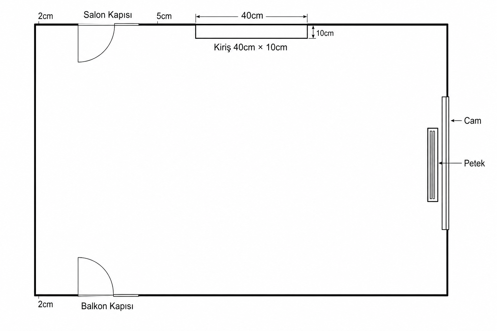

2 cm → Salon → 5 cm → Kiriş 40×10
Sol duvardan 2 cm → salon kapısı → 5 cm → kiriş 40 cm (içe 10 cm). Sığ çıkıntı; girinti değil.
Kapı hizası ve kiriş netleşti. Uydurma girinti kaldırıldı.

Sol duvardan 2 cm → salon kapısı → 5 cm → kiriş 40 cm (içe 10 cm). Sığ çıkıntı; girinti değil.
Sol duvardan 2 cm → balkon kapısı (salon ile aynı hiza). Kapılar doğru yere çekildi.
Cam açıklığı; petek odanın içinde cama bitişik.
Boş. İki kapı bu duvardan 2 cm içeride başlar.
Dar masa; petek önü açık.
Kapı yok; BESTÅ veya kanepe.
Sadece çıkıntı — altına/yanına yaslanma; girinti deposu yok.
İki kapının iç açılım yayları boş kalır.